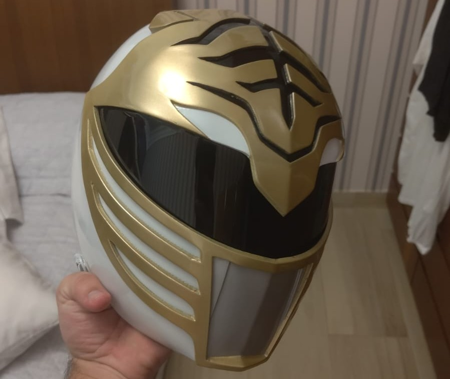

Desenvolvimento Java e Impressão 3D
Bem-vindo ao meu espaço de estudos. Aqui registro minha evolução no desenvolvimento de software e projetos de hardware. Atualmente, meu foco de estudo está voltado para a estrutura de dados em Java e a automação de processos. Porém já tive a oportunidade de trabalhar com desenvolvimento web, utilizando HTML, CSS e JavaScript para criar interfaces interativas, além de explorar o potencial da utilização de algoritmos de IA para otimizar tarefas e melhorar a eficiência dos sistemas. Além do código, dedico tempo à manutenção da minha Ender 3, como hobby. Fazendo peças de estudo ou até mesmo projetos de cosplay mais complexos, como um capacete de 3D impresso. A integração entre o software e o hardware é o que mais me motiva a continuar explorando novas tecnologias.
 FilipeADS - PUC Goiás
23 de junho de 2025
Capacete impresso a base de PLA